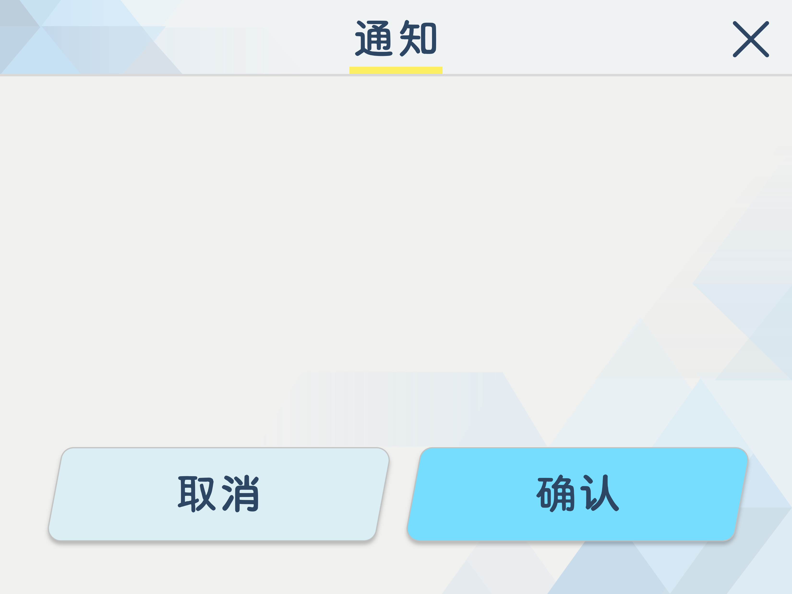
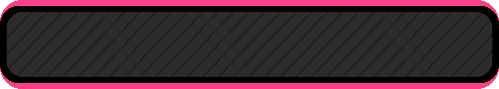

隐藏
1/1
画笔设置
颜色
粗细
自动校正
➤
滑动以清空
更多功能
圆形
直线
计时器
透明模式
视频背景
关于
视频背景设置
展台模式
摄像头已关闭
选择摄像头
旋转视频
相册(本地存储)
清空相册
返回相机
| 关闭Timer

确认清空当前页面？清空后无法撤回。
确认继续加页？
代码层面理论上限最多可达2^32 - 1页
受限于设备内存请勿过多
确认重置黑板？所有页面内容将被清空且无法恢复。
确认重置
取消

Time:0000000
网页版白板工具：https://i-blackboard.netlify.app/
服务器流量有限 省着点谢谢
Interactive Blackboard v3.4.0 _ 此项目已在GitHub上开源：
https://github.com/yzh1hdy/Floating-blackboard
确定
重置黑板
×